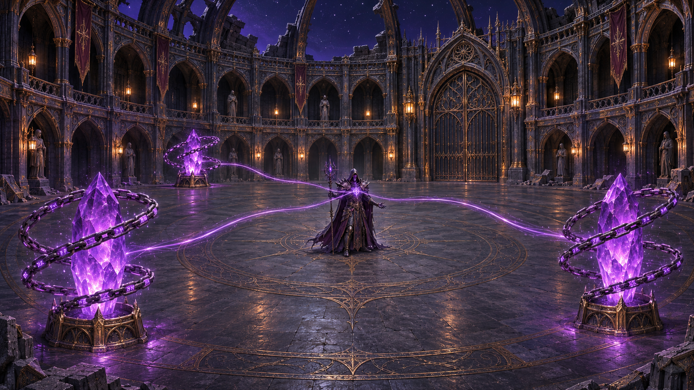

IM MONSTER / ART DIRECTION · 2026.11.04
斗场改进与完整声音试听
22条原创合成音效＋1条混音演示。低沉背景已用低电平导出，建议先听整体混音，再逐条比较。无自动播放；播放新条目会暂停上一条。
本页是试听与设计提案：声音尚未接入游戏，图片为AI概念图。主角受伤为非人声合成稿。
下载完整试听包 · 总体汇总 · 完整特效清单先听整体关系
D01 · 24.0s混音演示 · 三路供能逐一关闭
24秒：4.5/10.5/16.5秒断链，6/12/18秒破晶；19秒全破失能。
峰值 -6.0 dBFS · RMS -24.54 dBFS 下载 WAV 两种低沉背景循环
C01 · 8.0s · 循环背景循环 · 锁链盘旋摩擦
每枚独立声源；锁链断裂停止，低沉轻微摩擦。
峰值 -29.0 dBFS · RMS -43.79 dBFS 下载 WAVC02 · 8.0s · 循环背景循环 · 水晶供能共鸣
每枚独立声源；断链继续，破晶停止，三路分别控制。
峰值 -31.0 dBFS · RMS -38.44 dBFS 下载 WAV 主角攻击与反馈
A01 · 0.55s挥砍 · 暗刃破风
挥动有效帧；挥空也播放。
峰值 -9.0 dBFS · RMS -26.03 dBFS 下载 WAVA02 · 1.1s命中盔甲 · 厚重金属
实际命中盔甲时叠加，区别于链节。
峰值 -9.0 dBFS · RMS -26.7 dBFS 下载 WAVA04 · 0.8s主角受伤 · 钝击护印震裂
无真人气声的合成受创稿；成功扣血才播放。
峰值 -9.0 dBFS · RMS -24.38 dBFS 下载 WAVA05 · 0.9s主角防御 · 格挡
成功格挡触发。
峰值 -9.27 dBFS · RMS -26.2 dBFS 下载 WAVA05b · 1.3s主角破防 · 护印崩裂
破防独立事件。
峰值 -10.58 dBFS · RMS -27.3 dBFS 下载 WAV 锁链、水晶与断供
A07 · 0.85s锁链受击 · 链节震响
命中保护链时触发，限频。
峰值 -10.28 dBFS · RMS -26.93 dBFS 下载 WAVA08 · 1.8s锁链断裂 · 崩断散落
每组锁链破除仅一次；停止该组摩擦循环。
峰值 -9.09 dBFS · RMS -26.55 dBFS 下载 WAVA06 · 2.2s水晶爆裂 · 晶片与断供
晶体破碎瞬间触发；停止对应供能共鸣。
峰值 -9.0 dBFS · RMS -25.34 dBFS 下载 WAVC03 · 2.0s全部断供 · Boss失能
最后一枚水晶破碎时一次，与硬直同步。
峰值 -12.0 dBFS · RMS -32.47 dBFS 下载 WAV Boss 五种攻击
B01a · 1.1s飞页齐射 · 聚页预警
招式预警状态进入时一次播放。
峰值 -12.0 dBFS · RMS -23.19 dBFS 下载 WAVB02a · 1.1s冲击环 · 蓄压预警
招式预警状态进入时一次播放。
峰值 -12.0 dBFS · RMS -22.46 dBFS 下载 WAVB03a · 1.1s地裂 · 地底预警
招式预警状态进入时一次播放。
峰值 -12.0 dBFS · RMS -23.55 dBFS 下载 WAVB05a · 1.1s冲刺 · 危险预警
招式预警状态进入时一次播放。
峰值 -12.0 dBFS · RMS -22.01 dBFS 下载 WAVB01b · 1.2s飞页齐射 · 释放
整轮一次；单页不叠播完整主音。
峰值 -9.0 dBFS · RMS -25.91 dBFS 下载 WAVB02b · 1.6s冲击环 · 能量脉冲
波环释放一次。
峰值 -9.0 dBFS · RMS -25.84 dBFS 下载 WAVB03b · 2.2s连续地裂 · 四段裂地
试听为四段示例；接入时每段由实际地裂事件驱动。
峰值 -9.0 dBFS · RMS -23.43 dBFS 下载 WAVB04a · 1.6s激光 · 蓄能
与可见预警同步。
峰值 -9.0 dBFS · RMS -19.3 dBFS 下载 WAVB04b · 8.0s · 循环激光 · 持续束流
可停止循环；激光结束或中断立即淡出。
峰值 -17.0 dBFS · RMS -22.28 dBFS 下载 WAVB04c · 0.8s激光 · 收束
停束后一次短尾音。
峰值 -14.0 dBFS · RMS -29.35 dBFS 下载 WAVB05b · 1.0s冲刺 · 掠过与急停
冲刺发动；命中另外触发主角受伤。
峰值 -9.0 dBFS · RMS -23.43 dBFS 下载 WAV 新版斗场概念图
三枚水晶各自受到悬浮螺旋链环保护；紫色符文沿链流动，三路能量汇聚Boss胸口。中央留空，边缘增加建筑细节，星空与深色材质形成低亮度氛围。

改进总体汇总
# 斗场改进总体汇总 · 2026-11-04
本次交付：新版AI概念图、22条原创合成声音与1条24秒混音演示、音效与特效接入清单。声音是风格试听稿，尚未接入游戏；主角受伤采用非人声设计。概念图是美术目标，不是实际游戏截图。
## 斗场视觉
中央保持空旷、平整的Boss战斗区。外围三座水晶分散布置，保证环绕走位；残墙、石块只放边缘，避免卡住闪避路线。哥特拱廊、深蓝黑石材、少量旧铜边饰与暖色灯形成层次。破损穹顶露出星空，降低整体亮度但保留地面边缘、敌人轮廓和攻击预警。紫色灯光集中在水晶和Boss胸口；控制泛光，不让能量流遮挡动作。
每座水晶外围做悬浮螺旋链环，链节有体积，链身飘出紫色符文。三条细能量流从晶核汇入Boss胸口，链条只围护水晶，不连接Boss。参考图展示完整供能状态。
## 玩法与状态
|事件|视觉／音频|Boss变化|
|---|---|---|
|锁链完整|链环盘旋、紫符文；锁链摩擦与水晶共鸣各自循环|每枚存活水晶提供10%减伤和一份回血|
|锁链破除|链节崩断、符文熄灭；停止该组摩擦，水晶共鸣继续|仍然供能，尚不减少减伤或回血|
|水晶击碎|晶片飞散、残骸暗淡；该路能量与紫灯关闭，共鸣停止|减伤减少10个百分点，回血减少一份|
|三枚全碎|三路断供，Boss失能表现与短提示音|减伤0、回血0，只触发一次硬直|
回血速率与硬直时间待平衡测试。起测建议每晶每秒回复Boss最大生命0.15%，全破硬直2秒；这些不是已定数值。
## 两路低音量循环的接法
每座水晶各设 ChainFriction 和 CrystalHum 两个独立3D AudioSource，共六路。锁链摩擦峰值约−29dBFS、共鸣约−31dBFS，均为8秒周期循环文件；这些是文件电平，不等于实际听感响度。摩擦以低中频粗糙质感为主，共鸣以64–192Hz为主，避免尖锐持续高频。
断链只关对应 ChainFriction；破晶关对应 CrystalHum，建议80–150ms短淡出避免切断爆音。循环不与破碎一次性声音绑在同一个声源。每座水晶独立音量、距离衰减、开关；三路起播错开相位，背景总线统一限幅、降低总量，攻击预警优先。暂停、Boss死亡、退出停止所有循环；重试恢复六路初始状态。不要把低电平试听文件再自动归一化到攻击音量。
## 音效与特效改动
|类别|音效文件|特效／反馈|
|---|---|---|
|挥砍|A01|武器短弧轨迹，跟随有效挥动帧|
|盔甲命中|A02|命中点暖金火花、短紫符印裂纹|
|主角受伤|A04|方向性边缘提示、短震动，提供减弱选项|
|格挡／破防|A05 / A05b|局部护印涟漪／护印碎裂|
|飞页齐射|B01a / B01b|聚页预警、清晰飞行轨迹|
|冲击环|B02a / B02b|预警环、薄能量波，边界匹配伤害|
|连续地裂|B03a / B03b|裂纹预警、逐段爆发，保留安全区可读性|
|激光|B04a / B04b / B04c|蓄能、清楚束芯、收束，循环随状态停止|
|冲刺|B05a / B05b|方向预警、短残影、急停尘浪|
|锁链受击／破碎|A07 / A08|局部火花、符文闪烁／链节断开消散|
|水晶破碎|A06|裂纹、晶片、紫灯熄灭、暗淡残骸|
|背景摩擦／供能|C01 / C02|链环符文／三条供能流独立控制|
|全破硬直|C03|胸口汇聚光熄灭、一次失能震荡|
## 具体接入位置
- Assets/Scripts/Core/BossDefinition.cs：扩展分事件声音配置；建议拆成 CombatAudioProfile，避免全部攻击共用一条音效。
- Assets/Art/ForbiddenWarden/WardenEncounter.asset：替换对应配置引用；旧声音保留回退。
- BossEncounter：各攻击预警／释放／结束事件分别接B系列；DamageBoss 接减伤，战斗更新接回血；PlayerHurt 使用独立受伤音。
- PlayerCombat.ReceiveHit / BreakGuard：拆开实际受伤、成功格挡、破防；不要重复播放同一击。
- 新增 CrystalChainGuard、ArenaCrystal、BossPowerNetwork：分管锁链耐久、水晶状态、三路供能与全破事件。
- 建议游戏资源目录 Assets/Audio/Boss/CrystalMechanic 与 Assets/Art/SealedDuelArena20261104/CrystalMechanic。当前试听文件还在Docs内，没有替换游戏资源。
- 当前主角主要攻击为秘文弹；A01挥砍及近战轨迹是预留需求，实际加入近战还需动画、命中检测和有效帧。
## 实施顺序与验收
先做链保护→裸晶→破碎状态和碰撞，再接减伤回血，再接独立声源／灯效／能量流，最后完善攻击反馈与场景材质。具体派工由管理者决定。
验收重点：链完整不能伤晶；断链不断供；破一晶只关闭对应一路；减伤30→20→10→0%；回血3r→2r→r→0；全破硬直仅一次；暂停无回血；死亡不复活；重试完整复位；退出无残留循环；攻击预警在六路背景同时播放时仍清晰。需要实际Unity运行验证，本次没有宣称这些新机制已实现。
旧素材：audio目录保留此前7条备选魔法音效。本次新增声音由本地程序原创合成；生成脚本与电平清单随试听包提供。